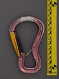
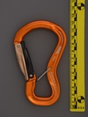
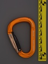
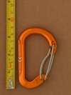
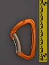

| Image | Summary | ||||
|---|---|---|---|---|---|
|  | Grivel Clepsydra (blank gate) | hourglass | full-auto | multi-gate | double-gate belay carabiner |
|  | Grivel Clepsydra (forged name) | hourglass | full-auto | multi-gate | double-gate belay carabiner |
 | Grivel Clepsydra S v1 | hourglass | full-auto | multi-gate | double-gate belay carabiner |
|  | Grivel Mega Twin Gate | HMS | full-auto | multi-gate | twin-gate HMS |
 | Grivel Plume C | asymmetric D | n/a | n/a | ultralight wiregate with wiregate captive end |
 | Grivel Plume Evo Wire | asymmetric D | n/a | n/a | ultralight ultracompact half-hooded wiregate |
 | Grivel Plume G | asymmetric D | full-auto | multi-gate | double-gate compact carabiner |
|  | Grivel Plume HMS | HMS | full-auto | multi-gate | micro HMS double-gate carabiner |
 | Grivel Plume Nut | asymmetric D | manual | gate stopped - gate stop | ultralight ultracompact screwlocker |
|  | Grivel Sigma | asymmetric D | full-auto | multi-gate | robust multi-gate carabiner |
 | Grivel Stealth Bent | bent spine | n/a | n/a | unique faceted shape |
 | Grivel Stealth Straight | bent spine | n/a | n/a | unique faceted shape |
 | Grivel Steel Two | asymmetric D | n/a | n/a | steel carabiner for permanent quickdraws |
 | Grivel Tau T | S-spine | full-auto | multi-gate | external spring, semi-locking carabiner |
 | Grivel VLAD Twin Gate | other | full-auto | multi-gate | integral rigging plate, multigate |